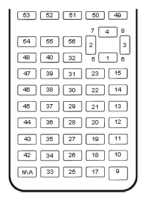

OS Utility Functions
Overview
These functions perform various actions related to the OS and its various features.
Documentation
- GetMode: det(22, mode)
Checks a specified mode, from 0 to 14. A table containing the information on the modes and possible outcomes is below.
Input
Mode
Possible Returns
0
Mathprint
0 if not enabled, 1 if enabled.
1
Notation
0 for Normal, 1 for Scientific, 2 for Engineering.
2
Trig Mode
0 for Radian, 1 for Degree.
3
Graph Mode
0 for Function, 1 for Parametric, 2 for Polar, 3 for Sequence.
4
Graph Equations
0 for Sequential, 1 for Simultaneous.
5
Numeric Format
0 for Real, 1 for a + bi mode, 2 for re^(Thetai). Theta is the theta token.
6
Window Mode
0 for Full, 1 for Horizontal, 2 for Graph-Table.
7
Coordinate Mode
0 for Rectangular coordinates, 1 for Polar coordinates
8
Grid Mode
0 if the grid is off, 1 if the grid is on.
9
Axis Mode
0 if the axis is off, 1 if it is on.
10
Axis Labels
0 if the axis labels are off, 1 if they are on.
11
Detect Asymptotes
0 if Asymptotes are off, 1 if they are on.
12
Stat Wizards
0 if Stat Wizards are off, 1 if they are on.
13
Mixed Fractions
0 if Mixed Fractions are off, 1 if they are on.
14
Decimal Answers
0 for Auto Answers, 1 for Decimal Answers.
- Parameters:
mode: Which mode to check. Refer to the table above. Must be between 0 and 14.
- Returns:
Theta: Varies based on the specified mode. See table above.
- RenameVar: det(23); Str0 = variable to rename; Str9 = new name
Renames the variable specified in
Str0with a new name specified inStr9. For appvars, the name inStr0must be preceeded with therowSwap(token, however, the new name does not need therowSwap(token. Renaming a program will result in the program being locked.- Parameters:
Str0: The name of the variable you wish to rename. If it is an appvar, it must be preceeded by therowSwap(token.Str9: The new name that you wish to rename the specified file to. It does not need to be preceeded by therowSwap(token, regardless of whether it is a program or appvar.
- Returns:
Renames the variable specified in
Str0with the new name specified inStr9.
- Errors:
..NT:EN:Mdepending on the amount of remaining memory and the size of the variable being renamed.
- LockPrgm: det(24); Str0 = variable to lock / unlock
Toggles the locked attribute of the program referenced by
Str0.Warning
If you lock/unlock an archived program, Celtic un-archives it when running the function and then re-archives it when the function is complete. This means that it could result in a garbage collect.
- Parameters:
Str0: The name of the program to toggle the locked attribute of. Follow the format documented here.
- Returns:
Toggles whether or not the specified program is locked.
- Errors:
..SUPPORTif you attempt to use this function on an appvar.
- HidePrgm: det(25); Str0 = variable to hide / unhide
Toggles the hidden attribute of the program referenced by
Str0.Warning
If you hide/unhide an archived program, Celtic un-archives it when running the function and then re-archives it when the function is complete. This means that it could result in a garbage collect.
- Parameters:
Str0: The name of the program to toggle the hidden attribute of. Follow the format documented here.
- Returns:
Toggles whether or not the specified program is hidden.
- Errors:
..SUPPORTif you attempt to use this function on an appvar.
- PrgmToStr: det(26, string_number); Str0 = variable to read
Copies the contents of a file specified in
Str0to the string specified bystring_number. If you wish to read the contents of an appvar, you must preceed the name with therowSwap(token inStr0.Warning
Using this command on ASM programs and AppVars could cause the string to contain invalid tokens, resulting in a crash. Keep this in mind when using the command and ensure that you do not accidentally try to get invalid tokens.
- Parameters:
string_number: The number of the string to copy to. Can be from 0 to 9. 0 meansStr0, 1 meansStr1and so on.Str0: Name of the variable to copy. The name must be preceeded by therowSwap(token if you wish to read an appvar.
- Returns:
The contents of the specified variable in the string specified by
string_number.
- Errors:
..NT:EN:Mif there is not enough memory to create the string with the contents of the specified variable...NULLVARif the specified file contains no data.
- GetPrgmType: det(27); Str0 = program to check
Gets the type of program specified in
Str0. This is not the OS type, it is the actual program type (C, ASM, etc). A table with the return codes and filetypes they signify is below.Code
Filetype
0
eZ80 Assembly
1
C
2
TI-BASIC
3
ICE
4
ICE Source
- Parameters:
Str0: Name of the program to check. It cannot be an AppVar. Follow the format documented here.
- Returns:
Theta: Contains the number referencing the filetype. See the table above.
- Errors:
..INVAL:Sif you attempt to use this function on an AppVar.
- GetBatteryStatus: det(28)
Gets the current status of the battery, as a number between 0 and 4, 0 being no charge and 4 being fully charged. If the battery is charging, 10 will be added. For example, a battery that is partially charged and also actively charging would return 12.
- Returns:
Theta: Current status of the battery.
- SetBrightness: det(29, brightness)
Sets the LCD to the specified
brightness. The brightness can be between 0 and 255, with 0 being the brightest and 255 being the darkest. If no argument is passed for the brightness, it will instead return the current brightness of the screen.Note
The brightness will not persist after the calculator is turned off. Instead, it will go back to what it was previously.
- Parameters:
brightness: The level of brightness to set the screen to, between 0 and 255. No brightness argument will instead return the current level of brightness.
- Returns:
Theta: If no brightness argument is passed,Thetawill contain the current brightness.If
brightnessis between 0 and 255, it will instead set the screen to the specified brightness, with 0 being the lightest and 255 the darkest.
- SearchFile: det(52, offset); Str0 = file name, Str9 = search string
Searches a program or AppVar specified by
file name, for asearch string, beginning at the user-specified (0-indexed)offset.- Parameters:
offset: Byte offset in the file to start searching, with 0 being the first byte of the file.Str0: Name of the file to search in. Follow the format documented here.Str9: String to search for.
- Returns:
Theta: The byte offset of the located string.
- Errors:
..E:NT:FNif the string is not located...INVAL:Sif the string is bigger than the file to search for.
- CheckGC: det(53); Str0 = variable name
Checks if the archiving of the file specified by
variable namewill trigger a Garbage Collect.Note
If the file is already archived, the command will not say that archiving it will cause a Garbage Collect, regardless of size.
- Parameters:
Str0: Name of variable to check for. Follow the format documented here.
- Returns:
Ans: 0 if a Garbage Collect will not occur, and 1 if it will.
- RunAsmPrgm: det(70); Ans = variable name
This command works similarly to ErrorHandle, though for assembly programs instead of BASIC ones. This includes assembly programs, C programs, and (compiled) ICE programs. It can be useful in newer versions of TI-OS where assembly is blocked. Unlike ErrorHandle,
Ansshould not begin with theprgmtoken.- Parameters:
Ans: Name of the ASM program to run. Follow the format documented here.
- Returns:
Theta: Contains the error code returned by the program, or 0 if no error occured.
- Errors:
..SUPPORTif the program name inAnsis not an assembly program...NT:EN:Mif there is not enough free RAM to execute the program.
- LineToOffset: det(71, line); Str0 = variable name
Gets the byte offset of a newline in the program or AppVar specified by
Str0. Lines begin at 1 and bytes begin at 0.- Parameters:
line: Line to get the byte offset of.Str0: Name of the variable to search for the byte offset in. Follow the format documented here.
- Returns:
Theta: Contains the byte offset ofline.
- Errors:
..L:NT:FNif the line is not found in the file.
- OffsetToLine: det(72, offset); Str0 = variable name
Gets the line at which a specific byte (specified by
offset) occurs in the program or AppVar specified byStr0. Lines begin at 1 and bytes begin at 0.- Parameters:
offset: Byte offset to detect the line it occurs in.Str0: Name of the variable to search for the line in. Follow the format documented here.
- Returns:
Theta: Line containingoffset.
- Errors:
..E:NT:FNif the offset does not exist in the file.
- GetKey: det(73)
This command acts as a faster version of the TI-OS GetKey command, though it returns different keycodes, including keycodes for diagonal keypresses and other combinations of arrow keys. A map with the keycodes for different keys (returned in
Ans) is below:A map of buttons and their corresponding keycodes
There are also a few “unofficial” combinations of arrow keys with codes as well:
Keycode
Keys
57
Left / Right
58
Left / Right / Down
59
Up / Down
60
Up / Left / Down
61
Up / Right / Down
62
Up / Right / Left
63
All arrow keys
- Returns:
Ans: The keycode of the key(s) pressed.
- TurnCalcOff: det(74)
This command turns the calculator off. When the user presses the [on] key, it will resume program execution after the command.
- Returns:
See above.
- BackupString: det(75, string_number)
Backs up the contents of a string to be restored later with the RestoreString command.
string_numberrefers to the string to back up, with 0 beingStr0, 1 beingStr1, and so on. Keep in mind that if the string being backed up is greater than 256 bytes in size, only the first 256 bytes will be backed up by the command. If a string has previously been backed up, backing up a new string will overwrite the old one.- Parameters:
string_number: Which string to back up, with 0 beingStr0, 1 beingStr1, and so on. This number can range between 0 - 9.
- Returns:
Backs up the string specified by the user to be restored at a future time in the program.
- Errors:
..INVAL:Sif the string being backed up has a length of 0.
- RestoreString: det(76, string_number)
Restores the contents of a string backed up by the BackupString command.
string_numberrefers to the string to copy the backup into. This does not need to be the same string as the one previously backed up.Warning
It is advised to not restore a string if no string has previously been backed up, as you could end up loading invalid tokens into the string and corrupting it.
- Parameters:
string_number: Which string to restore to, with 0 beingStr0, 1 beingStr1, and so on. This number can range between 0 - 9.
- Returns:
Copies the data backed up from the BackupString command into the user-specified string.
- Errors:
..NT:EN:Mif there is not enough memory to complete the action.
- BackupReal: det(77, variable)
This command functions similarly to BackupString, though it backs up a real number instead.
variableis a number referencing the variable to be backed up, and can range from 1 to 27, with 1 beingA, 2 beingB, and so on up until 27 which representsTheta. This command will only allow you to back up variables with real values.- Parameters:
variable: A number referencing the variable to back up, with 1 beingA, 2 beingB, and so on until 27, which isTheta.
- Returns:
Backs up the variable specified by the user, which can be restored into a variable later with RestoreReal.
- Errors:
..NT:REAL: If the value of the variable being backed up is not a real number.
- RestoreReal: det(78, variable)
This command functions similarly to RestoreString, though it restores a real number instead.
variableis a number referencing the variable to copy the backed up value into, and can range from 1 to 27, with 1 beingA, 2 beingB, and so on up until 27 which representsTheta. The variable restored to does not need to be the same one previously backed up.Warning
It is advised to not restore a variable if no variable has previously been backed up, as you could end up corrupting it like RestoreString.
- Parameters:
variable: A number referencing the variable to restore to, with 1 beingA, 2 beingB, and so on until 27, which isTheta.
- Returns:
Copies the value backed up by BackupReal into a variable specified by the user.
- Errors:
..NT:REAL: If the value of the currently backed up number is not a real number.
- SetParseLine: det(79, line)
This command jumps to a specific line in the program that is currently being executed. This can save space in your program by avoiding the need of Labels and Gotos. This makes it a useful command for optimizing programs or creating a “function-like” structure in your programs as well. It will also return the line that is currently being parsed (The one with the jump command) in
Thetabefore jumping, making returning to the previous location much easier, as seen in this example:1: Disp "PROGRAM START" 2: det(79,5) // Jump to the fifth line of the program 3: Disp "PROGRAM FINISH" 4: Return 5: Disp "PROGRAM MIDDLE" 6: det(79,Theta+1) // Jump to the line after the previous jump, in this case, line 3
To make using this command easier, you can view the line number of the line your cursor is currently on in the editor by pressing 2nd + enter if Celtic is installed. This will display the current line number in the status bar, along with the current byte offset and size of the program in bytes as well.
- Alternative method:
det(79)ORdet(79, 0) If no line argument is included or you attempt to jump to line 0, Celtic will only return the current line offset without jumping.
- Parameters:
line: The line of the program currently being executed to jump to.
- Returns:
Theta: The line of the program that the SetParseLine command was ran on.
- Errors:
..L:NT:FNif the line being attempted to jump to does not exist in the currently running program.
- Alternative method:
- SetParseByte: det(80, offset)
This command jumps to a specific byte offset in the program currently being executed. It acts essentially the same as SetParseLine, other than working with byte offsets instead of lines. This also means that the command will run faster. It will also return the byte offset after the command in
Theta.Note
If the byte offset specified is past the end of program, SetParseByte will simply jump to the end of the program, which will end the program.
To make using this command easier, you can view the current offset in your program of the byte your cursor is currently on in the editor by pressing 2nd + enter if Celtic is installed. This will display the current byte offset in the status bar, along with the current line number and size of the program in bytes as well.
- Alternative method:
det(80) If you do not include an offset argument, SetParseByte will only return the byte offset after the SetParseByte command without jumping.
- Parameters:
offset: Byte offset in the currently executing program to jump to.
- Returns:
Theta: Contains the byte offset after the SetParseByte command.
- Alternative method:
- SwapFileType: det(81); Str0 = variable name
This command swaps the type of a given file from program to AppVar, or vice versa. For example, if used on the AppVar “FOOBAR”, it will change said AppVar’s file type to a program. If used again, this time on the program “FOOBAR”, it will change the program’s file type to become an AppVar. Swapping an AppVar to a program type will swap to a locked program, for safety purposes.
Warning
If you swap the file type of a file in the archive, Celtic un-archives it when running the function and then re-archives it when the function is complete. This means that it could result in a garbage collect.
- Parameters:
Str0: The name of the variable to run the operation on. Like other Celtic commands, AppVar names must be prefaced with therowSwap(token.
- Returns:
Swaps the file type between AppVar and program.
- ResetScreen: det(82)
This command clears the screen, restores the status bar, and essentially resets / cleans up the entire screen. You can think of it like ClrHome, but applying to the entire screen as well.
- Returns:
See above.